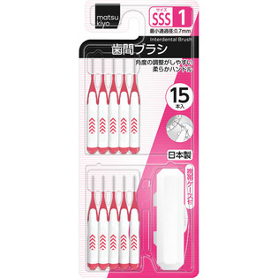

返回列表
产品名称：matsukiyo 歯間ブラシ サイズ1（SSS）

毅・インエグゼサプライ matsukiyo 歯間ブラシ サイズ1（SSS） １５本
メーカー 毅・インエグゼサプライ
JANコード 4538604523275
商品の特徴
角度の調整がしやすい柔らかハンドル
最小通過径：0.7mm
・歯ブラシでは落としにくい歯と歯の間の歯垢をしっかり除去します。
・外出先での携帯に便利なケース付きです（本体が2本入ります）。
成分・分量
用法及び用量